Candidate List 20260418 Previous Day Next Day Section 1: New Sources (age<1d) Cosmological Afterglow
Section 2: Old (1-5d) sources observed last night placeholder
Section 1: New Afterglow/FBOT Cands Last Night (1)
1. ZTF26aategue (Afterglow?) [Back to Top] [Share] [Trigger Swift] [Fritz ] [Lasair ]RA, Dec: 198.1829, -2.05198 13h12m43.90s, -2d-3m-7.11sGalactic (l, b): 313.74175, 60.37209 ext(g-r) = 0.029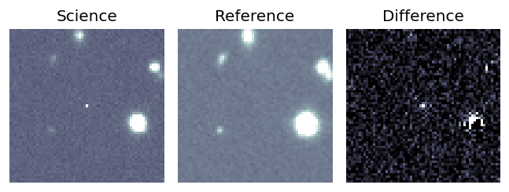
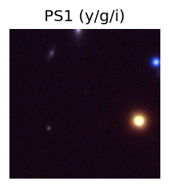
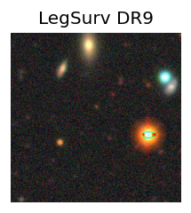
LegacySurvey: 1 sources in 3 arcsec Closest: d = 4.27 arcsec, 356.0 deg (east of north) photoz=0.6 (68% bounds 0.49, 0.72), type=PSF peak abs mag = -23.73 (68% bounds -23.17, -24.2) 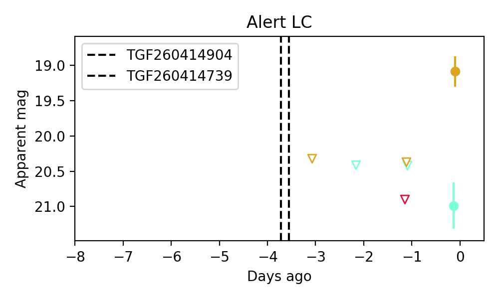
Consistent with synchrotron, g-r>0!
Section 2: Older Sources Observed Last Night (13)
0. ZTF26aasnlpp (FBOT?) [Back to Top] [Share] [Trigger Swift] [Fritz ] [Lasair ]RA, Dec: 220.23186, 5.4102 14h40m55.65s, 5d24m36.72sGalactic (l, b): 358.04024, 56.07967 ext(g-r) = 0.04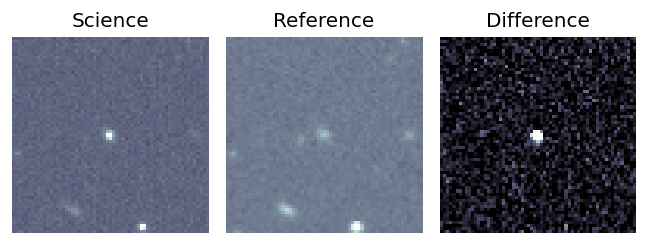
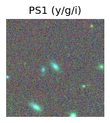
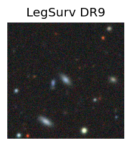
peak abs mag = -21.09 LegacySurvey: 1 sources in 3 arcsec Closest: d = 0.33 arcsec, 4.5 deg (east of north) photoz=0.04 (68% bounds 0.03, 0.06), type=SER peak abs mag = -18.96 (68% bounds -18.34, -19.72) 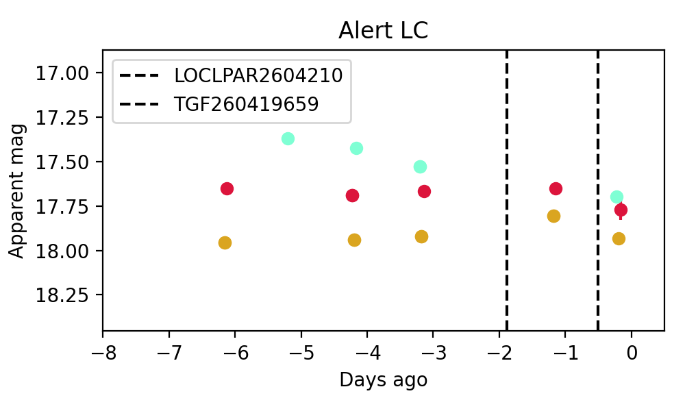
1. ZTF26aaspazb (FBOT?) [Back to Top] [Share] [Trigger Swift] [Fritz ] [Lasair ]RA, Dec: 207.11549, 77.75608 13h48m27.72s, 77d45m21.90sGalactic (l, b): 119.08186, 38.94269 ext(g-r) = 0.027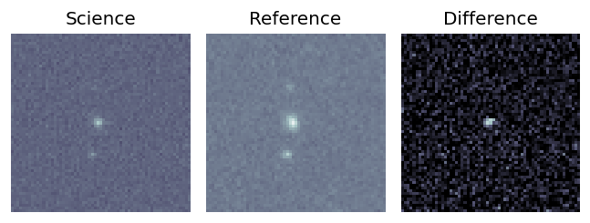
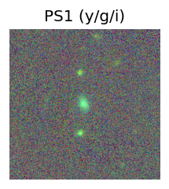
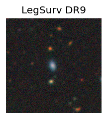
LegacySurvey: 1 sources in 3 arcsec Closest: d = 0.80 arcsec, 93.9 deg (east of north) photoz=0.12 (68% bounds 0.09, 0.15), type=SER peak abs mag = -19.54 (68% bounds -18.91, -20.16) 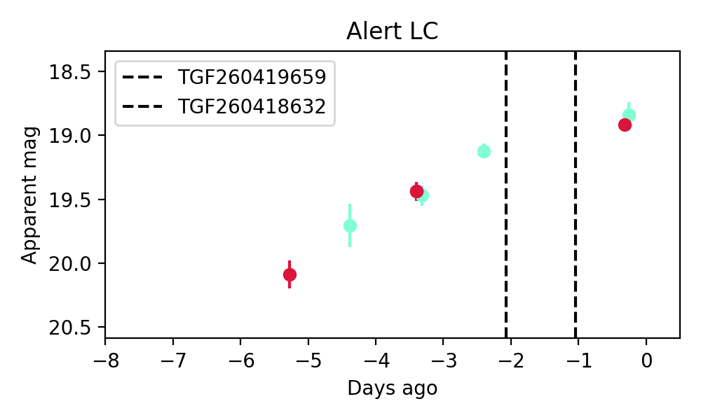
Consistent with synchrotron, g-r>0!
2. ZTF26aaspjvp (Afterglow?) [Back to Top] [Share] [Trigger Swift] [Fritz ] [Lasair ]RA, Dec: 297.24031, 4.15287 19h48m57.67s, 4d 9m10.35sGalactic (l, b): 43.33696, -10.80347 ext(g-r) = 0.187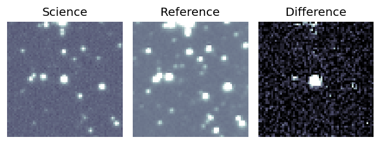
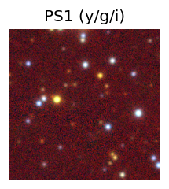
PS1: 1 source in 3 arcsec Closest: d = 4.77 arcsec photoz=0.36+/-0.49 peak abs mag = -26.09 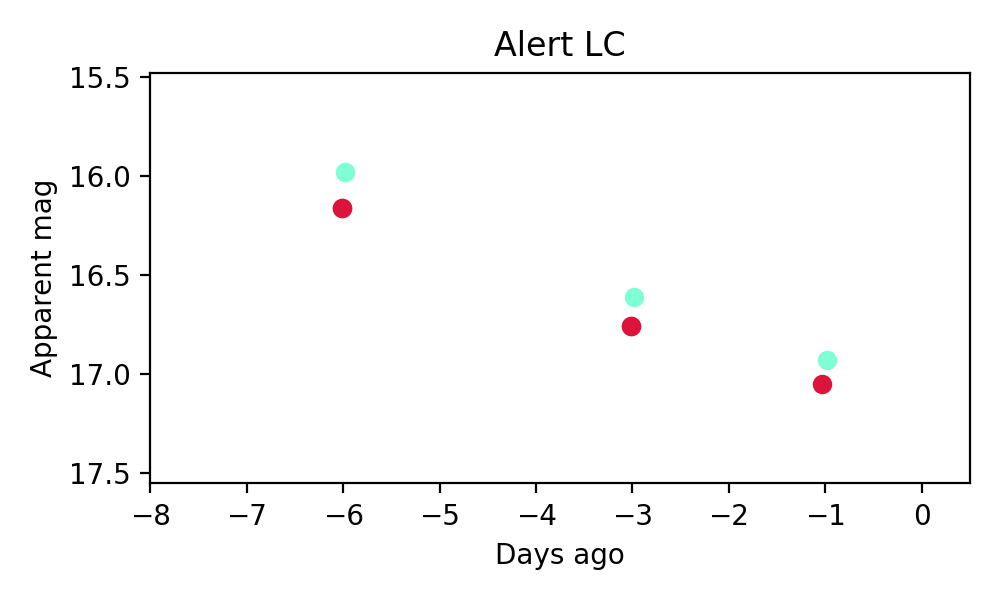
3. ZTF26aaspkec (FBOT?) [Back to Top] [Share] [Trigger Swift] [Fritz ] [Lasair ]RA, Dec: 298.01924, 5.89296 19h52m4.62s, 5d53m34.67sGalactic (l, b): 45.26921, -10.64341 ext(g-r) = 0.19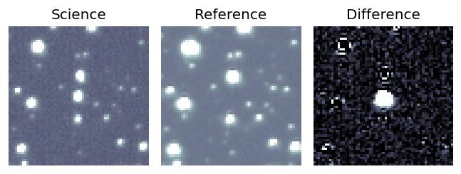
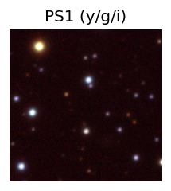
PS1: 1 source in 3 arcsec Closest: d = 6.34 arcsec photoz=0.50+/-0.02 peak abs mag = -27.42 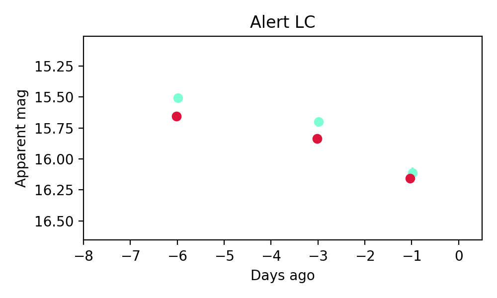
4. ZTF26aasvjqa (FBOT?) [Back to Top] [Share] [Trigger Swift] [Fritz ] [Lasair ]RA, Dec: 185.17651, 23.64014 12h20m42.36s, 23d38m24.50sGalactic (l, b): 237.92493, 82.23411 ext(g-r) = 0.018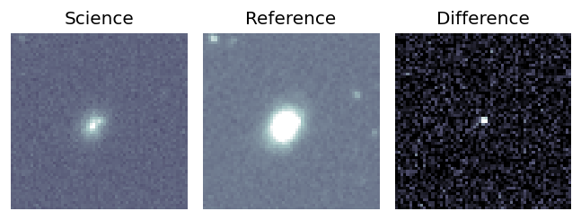
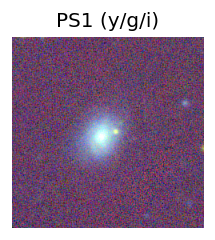
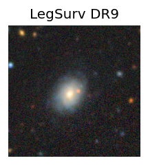
peak abs mag = -20.47 LegacySurvey: 1 sources in 3 arcsec Closest: d = 2.13 arcsec, 264.4 deg (east of north) photoz=0.13 (68% bounds 0.1, 0.15), type=SER peak abs mag = -19.53 (68% bounds -18.99, -19.88) 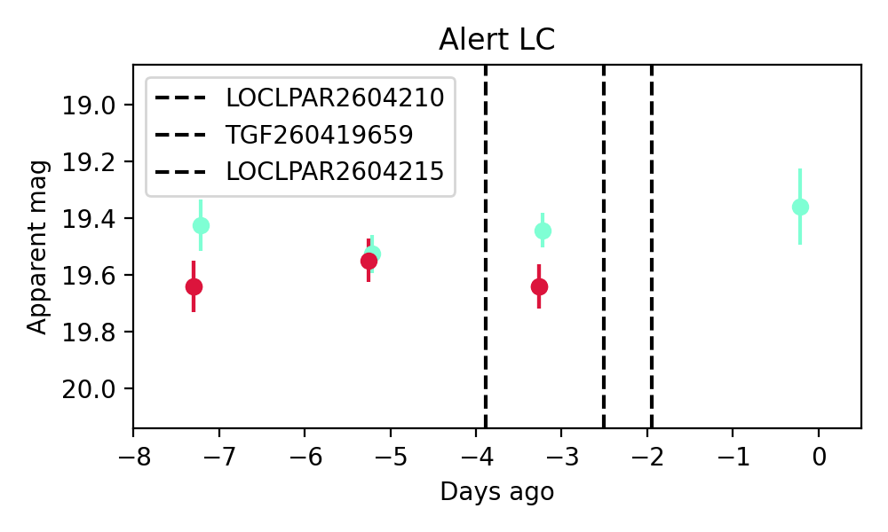
Consistent with synchrotron, g-r>0!
5. ZTF26aasvrgq (Afterglow?) A ) [Back to Top] [Share] [Trigger Swift] [Fritz ] [Lasair ]RA, Dec: 190.06189, 46.85162 12h40m14.85s, 46d51m5.83sGalactic (l, b): 128.57434, 70.15384 ext(g-r) = 0.017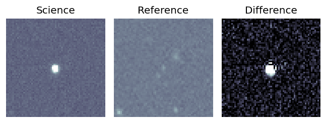
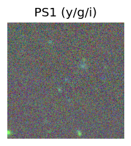
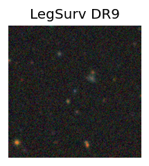
LegacySurvey: 1 sources in 3 arcsec Closest: d = 0.15 arcsec, 323.9 deg (east of north) photoz=0.59 (68% bounds 0.18, 1.12), type=PSF peak abs mag = -27.48 (68% bounds -24.43, -29.17) 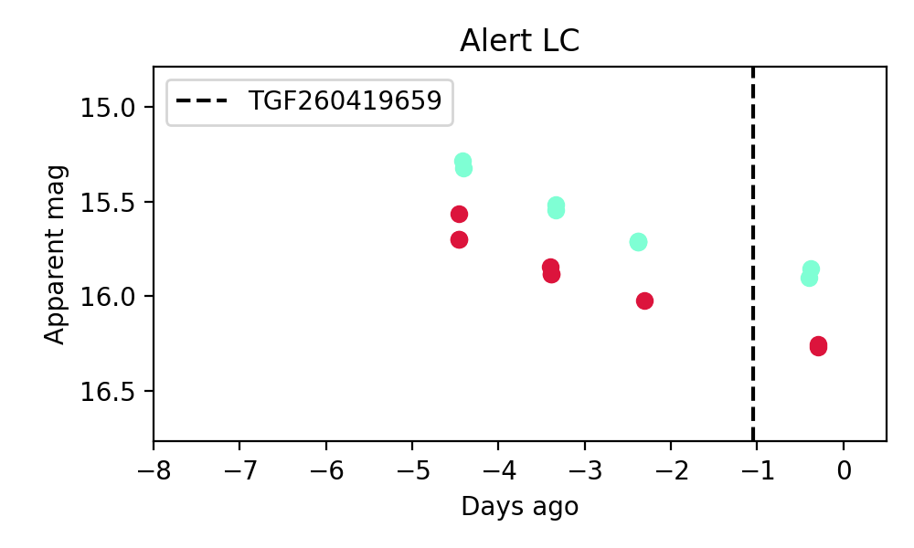
6. ZTF26aasvsgb (FBOT?) [Back to Top] [Share] [Trigger Swift] [Fritz ] [Lasair ]RA, Dec: 150.27578, 12.89376 10h 1m6.19s, 12d53m37.52sGalactic (l, b): 223.97052, 47.77541 WARNING: 0.71 deg from ecliptic plane ext(g-r) = 0.036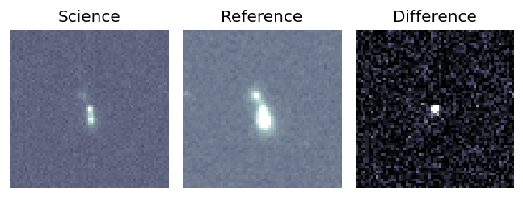
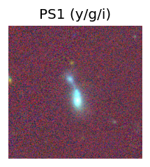
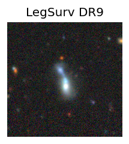
peak abs mag = -23.88 LegacySurvey: 1 sources in 3 arcsec Closest: d = 1.05 arcsec, 206.2 deg (east of north) photoz=0.06 (68% bounds 0.05, 0.11), type=SER peak abs mag = -18.28 (68% bounds -17.69, -19.47) 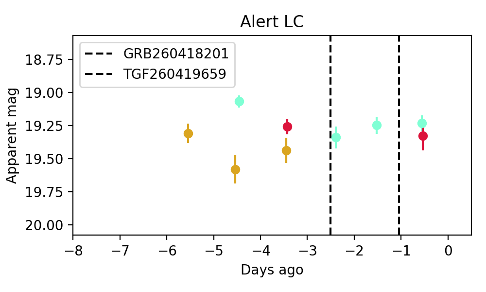
7. ZTF26aasxsos (FBOT?) [Back to Top] [Share] [Trigger Swift] [Fritz ] [Lasair ]RA, Dec: 187.54973, 18.68154 12h30m11.93s, 18d40m53.54sGalactic (l, b): 271.7818, 80.24292 ext(g-r) = 0.028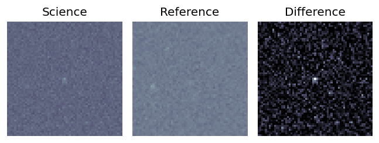
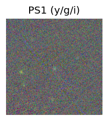
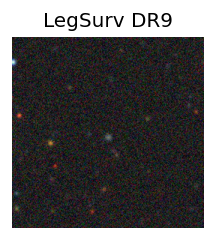
peak abs mag = -20.66 LegacySurvey: 1 sources in 3 arcsec Closest: d = 1.94 arcsec, 185.4 deg (east of north) photoz=0.25 (68% bounds 0.19, 0.41), type=REX peak abs mag = -20.53 (68% bounds -19.77, -21.72) 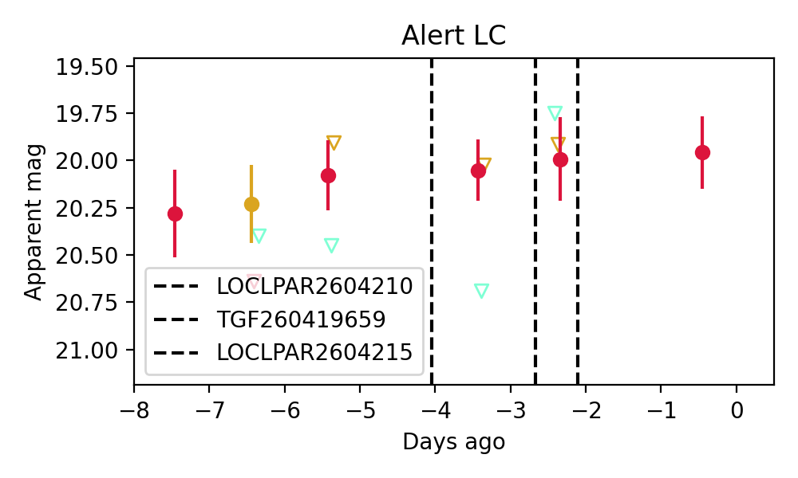
8. ZTF26aatahtv (Afterglow?) [Back to Top] [Share] [Trigger Swift] [Fritz ] [Lasair ]RA, Dec: 228.80901, -6.11077 15h15m14.16s, -6d-6m-38.78sGalactic (l, b): 354.58542, 41.90074 ext(g-r) = 0.093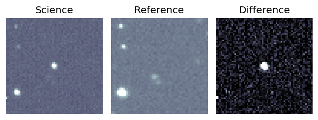
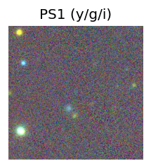
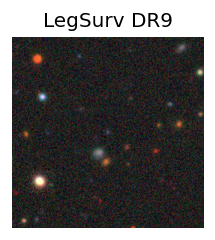
LegacySurvey: 1 sources in 3 arcsec Closest: d = 0.04 arcsec, 121.3 deg (east of north) photoz=0.95 (68% bounds 0.64, 1.25), type=PSF peak abs mag = -26.89 (68% bounds -25.83, -27.62) 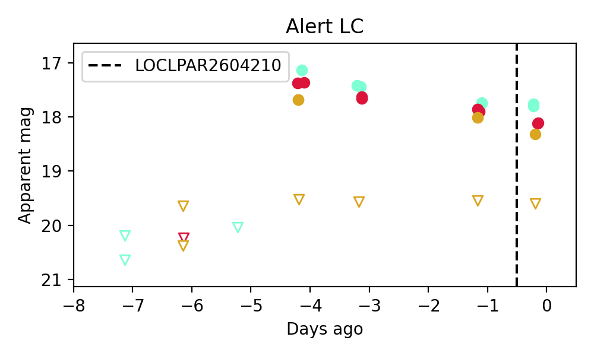
9. ZTF26aatbvvn (Afterglow?) [Back to Top] [Share] [Trigger Swift] [Fritz ] [Lasair ]RA, Dec: 268.2875, 11.04177 17h53m9.00s, 11d 2m30.38sGalactic (l, b): 36.41723, 17.88481 ext(g-r) = 0.268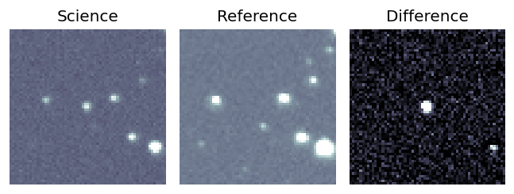
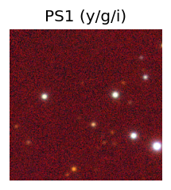
PS1: 1 source in 3 arcsec Closest: d = 8.70 arcsec photoz=0.52+/-0.07 peak abs mag = -24.79 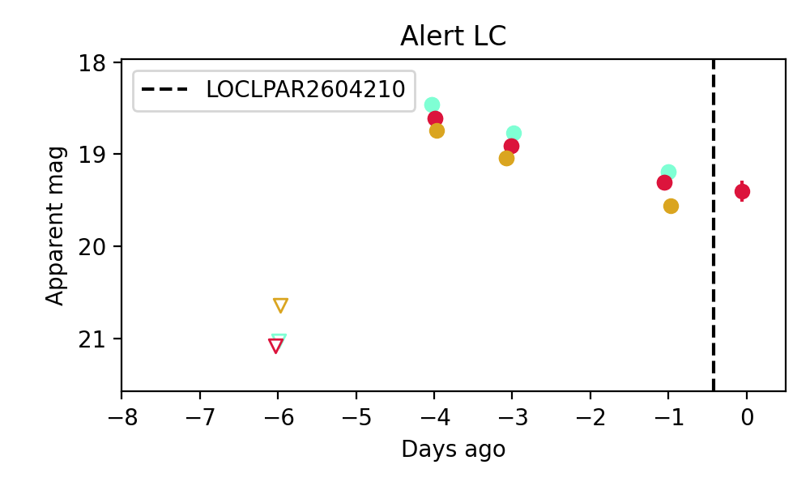
10. ZTF26aatdfpr (FBOT?) [Back to Top] [Share] [Trigger Swift] [Fritz ] [Lasair ]RA, Dec: 188.12995, 14.56931 12h32m31.19s, 14d34m9.51sGalactic (l, b): 282.6502, 76.69029 ext(g-r) = 0.043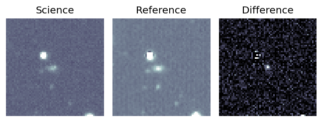
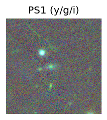
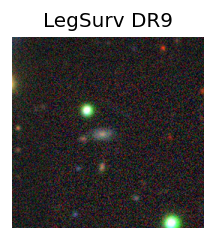
peak abs mag = -17.63 LegacySurvey: 1 sources in 3 arcsec Closest: d = 0.96 arcsec, 276.8 deg (east of north) photoz=0.99 (68% bounds 0.56, 1.34), type=REX peak abs mag = -22.93 (68% bounds -21.4, -23.75) 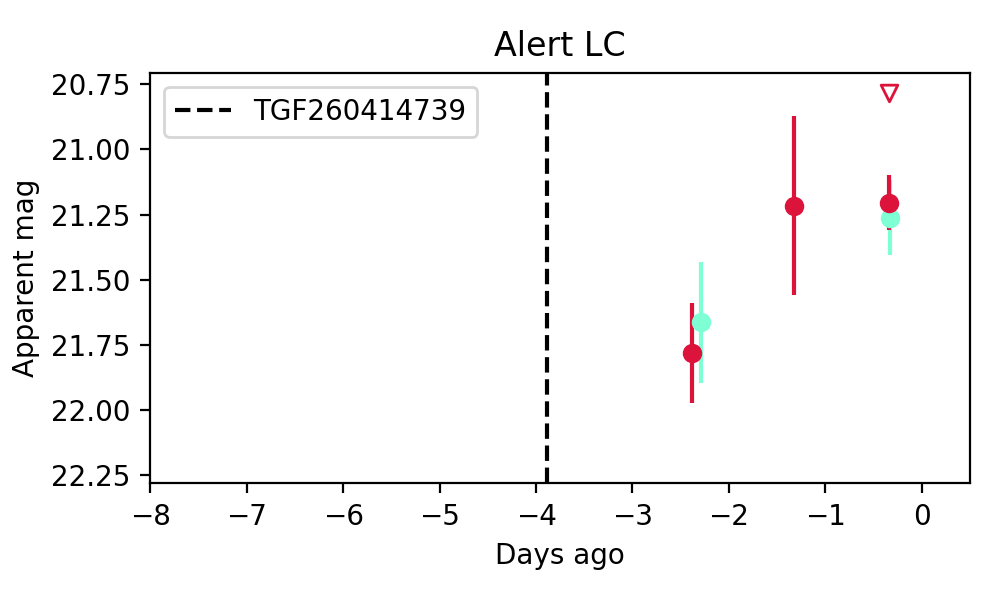
Consistent with synchrotron, g-r>0!
11. ZTF26aatdlls (FBOT?) [Back to Top] [Share] [Trigger Swift] [Fritz ] [Lasair ]RA, Dec: 175.03652, 27.66023 11h40m8.77s, 27d39m36.84sGalactic (l, b): 206.89549, 74.18045 ext(g-r) = 0.026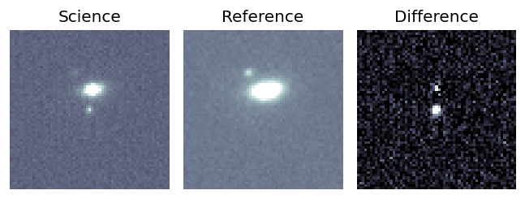
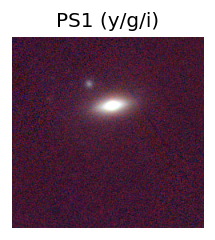
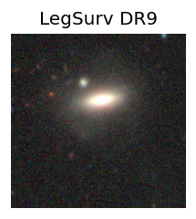
peak abs mag = -16.91 LegacySurvey: 1 sources in 3 arcsec Closest: d = 2.81 arcsec, 225.0 deg (east of north) photoz=0.16 (68% bounds 0.04, 0.67), type=REX peak abs mag = -20.45 (68% bounds -17.3, -24.06) 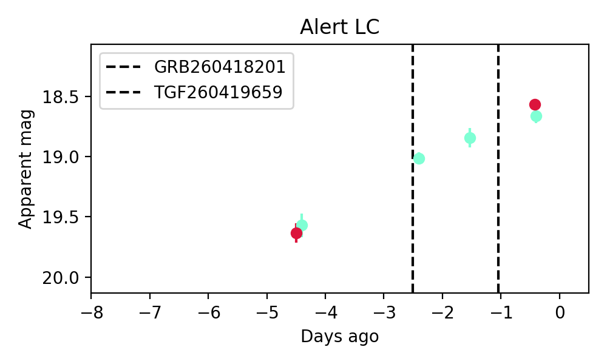
Consistent with synchrotron, g-r>0!
12. ZTF26aatecol (Afterglow?) [Back to Top] [Share] [Trigger Swift] [Fritz ] [Lasair ]RA, Dec: 199.46223, 30.4199 13h17m50.94s, 30d25m11.63sGalactic (l, b): 64.12161, 83.3439 ext(g-r) = 0.011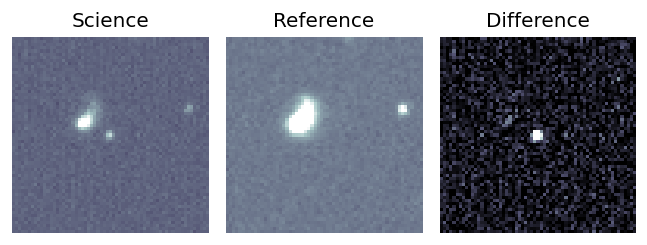
peak abs mag = -23.17 LegacySurvey: 1 sources in 3 arcsec Closest: d = 7.70 arcsec, 357.3 deg (east of north) photoz=0.63 (68% bounds 0.59, 0.67), type=DEV peak abs mag = -23.75 (68% bounds -23.57, -23.91) Consistent with synchrotron, g-r>0!